Neste capítulo, relembramos a potenciação de números naturais e introduzimos a potenciação de números inteiros e racionais. São exploradas algumas propriedades da potenciação, que serão retomadas e aprofundadas no 8.º ano. A propriedade de divisão de potências de mesma base pode auxiliar o aluno a entender por que todo número elevado a zero é igual a 1. No volume do 6.º ano, quando foi apresentado o conceito de potenciação, apenas afirmou-se que todo número elevado a zero é igual a 1. Aproveite esse momento para esclarecer o porquê.
Com relação à operação de radiciação, nesse momento trabalharemos somente com a raiz quadrada exata de números racionais e mostraremos por que um número negativo não apresenta raiz quadrada. A operação de radiciação será retomada nos anos posteriores, nos quais faremos um aprofundamento.
Atividade 1
Ao iniciar o estudo da potenciação, nas questões apresentadas na seção “Troca de ideias”, os alunos poderão utilizar um esquema para representar a quantidade de mensagens que foram enviadas. Observe:
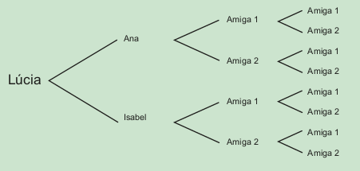Podemos representar a quantidade de mensagens enviadas por meio de potências, porém, como queremos o seu total, há necessidade de calcular a quantidade de mensagens enviadas durante o processo, e não somente a quantidade de destinatários finais. Dessa forma, temos:
\(2^{1} + 2^{2} + 2^{3} = 2 + 4 + 8 = 14\)
Portanto, foram enviadas ao total 14 mensagens.
EF07MA01
CAPÍTULO 3 - Potenciação e raiz quadrada
Potenciação envolvendo números positivos e negativos
Lúcia aproveitou o dia do amigo e mandou uma mensagem por e-mail para Ana e Isabel. Ana e Isabel gostaram da ideia e ambas enviaram a mensagem para mais duas amigas, sendo que cada uma dessas amigas enviou a mensagem para mais duas. Quantas mensagens foram enviadas?

1. Troque ideias com um colega e representem, no caderno, um esquema para mostrar a quantidade de mensagens que foram enviadas.
a) Podemos representar a quantidade de mensagens enviadas por meio de potências? Represente-as e calculem quantas mensagens foram enviadas.
Para resolvermos determinadas situações, podemos utilizar o cálculo envolvendo potências.
A potenciação é uma multiplicação de fatores iguais.
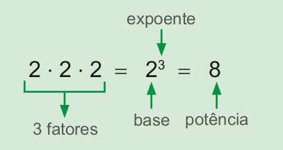Vejamos, agora, como resolver uma potência quando a base é um número negativo. Vamos utilizar a definição de potência. Observe:
a) \((-3)^{1} = -3\)
b) \((-3)^{2} = (-3) \cdot (-3) = 9\)
c) \((-3)^{3} = (-3) \cdot (-3) \cdot (-3) = 27\)
d) \((-3)^{4} = (-3) \cdot (-3) \cdot (-3) \cdot (-3) = 81\)
e) \((-3)^{5} = (-3) \cdot (-3) \cdot (-3) \cdot (-3) \cdot (-3) = 243\)
f) \((-3)^{6} = (-3) \cdot (-3) \cdot (-3) \cdot (-3) \cdot (-3) \cdot (-3) = 729\)
UNIDADE 2 - CAPÍTULO 3
65
Atividade 2
Resposta pessoal. Verifique se os alunos percebem que quando a base de uma potência é negativa e o seu expoente é par, então o valor da potência será um número positivo. Se a base da potência for um número negativo e o expoente for um número ímpar, então o valor da potência será um número negativo.
EF07MA01
Agora, vejamos outro exemplo:
a) \( \left(-\dfrac{1}{2}\right)^{1} = -\dfrac{1}{2} \)
b) \( \left(-\dfrac{1}{2}\right)^{2} = \left(-\dfrac{1}{2}\right) \cdot \left(-\dfrac{1}{2}\right) = \dfrac{1}{4} \)
c) \( \left(-\dfrac{1}{2}\right)^{3} = \left(-\dfrac{1}{2}\right) \cdot \left(-\dfrac{1}{2}\right) \cdot \left(-\dfrac{1}{2}\right) = -\dfrac{1}{8} \)
d) \( \left(-\dfrac{1}{2}\right)^{4} = \left(-\dfrac{1}{2}\right) \cdot \left(-\dfrac{1}{2}\right) \cdot \left(-\dfrac{1}{2}\right) \cdot \left(-\dfrac{1}{2}\right) = \dfrac{1}{16} \)
e) \( \left(-\dfrac{1}{2}\right)^{5} = \left(-\dfrac{1}{2}\right) \cdot \left(-\dfrac{1}{2}\right) \cdot \left(-\dfrac{1}{2}\right) \cdot \left(-\dfrac{1}{2}\right) \cdot \left(-\dfrac{1}{2}\right) = \dfrac{1}{32} \)
f) \( \left(-\dfrac{1}{2}\right)^{6} = \left(-\dfrac{1}{2}\right) \cdot \left(-\dfrac{1}{2}\right) \cdot \left(-\dfrac{1}{2}\right) \cdot \left(-\dfrac{1}{2}\right) \cdot \left(-\dfrac{1}{2}\right) \cdot \left(-\dfrac{1}{2}\right) = \dfrac{1}{64} \)
2. Troque ideias com um colega e observem os sinais do valor das potências em relação aos seus expoentes. Discutam sobre as conclusões a que vocês chegaram com seu professor.
a) No caderno, construam um quadro para resumir as conclusões a que vocês chegaram sobre a relação entre os sinais do valor das potências e seus expoentes. Vejam o modelo a abaixo:
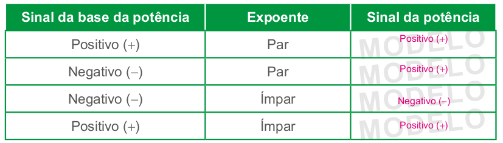Expoente 1 e 0 (zero)
Quando o expoente é igual a 1, a potência é igual a própria base.
UNIDADE 2 - CAPÍTULO 3
66
Algumas propriedades da potenciação
Relembre os alunos, para que a potenciação corresponda à multiplicação de fatores iguais pode ser escrita de forma simplificada. As propriedades da potenciação serão retomadas e aprofundadas no 8.º ano.
Nesse momento, abordaremos:
► Multiplicação de potências de mesma base.
► Divisão de potências de mesma base.
► Potência de uma potência.
EF07MA01
► \((-13)^{1} = -13\)
► \((-0,5)^{1} = -0,5\)
► \( \left(-\dfrac{1}{3}\right)^{1} = - \dfrac{1}{3} \)
Quando o expoente é igual a 0 (zero) e a base é diferente de zero, a potência é igual a 1.
► \((-13)^{0} = 1\)
► \((0,5)^{0} = 1\)
► \( \left(-\dfrac{1}{3}\right)^{0} = 1 \)
Atenção!
► \((-7)^{2} \mathrlap{\,/}{=} -7^{2}\), pois
\((-7)^{2} = (-7) \cdot (-7) = 49\)
\(-7^{2} = -(7 \cdot 7) = -49\)
► \((-1,2)^{2} \mathrlap{\,/}{=} -1,2^{2}\), pois
\((-1,2)^{2} = (-1,2) \cdot (-1,2) = 1,44\)
\(-1,2^{2} = -(1,2 \cdot 1,2) = -1,44\)
Algumas propriedades da potenciação
Multiplicação de potências de mesma base
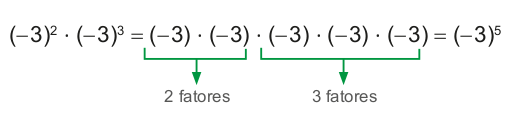Ou seja,
\((-3)^{2} \cdot (-3)^{3} = (-3)^{2+3} = (-3)^{5}\)
![Exemplo de multiplicação de potências de mesma base. (Menos um quinto) elevado à quarta potência vezes (menos um quinto) elevado à segunda potência igual (menos um quinto) vezes (menos um quinto) vezes (menos um quinto) vezes (menos um quinto) vezes (menos um quinto) vezes (menos um quinto) igual (menos um quinto) elevado a sexta potência. Abaixo da operação uma flecha indica os quatro primeiros (menos um quinto) como 4 fatores. Uma outra flecha indica a sequência dos 2 próximos (menos um quinto) como 2 fatores.](../../resources/images/unidade2/capitulo3/imagem5.png)
Ou seja,
\( \left(-\dfrac{1}{5}\right)^{4} \cdot \left(-\dfrac{1}{5}\right)^{2} = \left(-\dfrac{1}{5}\right)^{4+2} = \left(-\dfrac{1}{5}\right)^{6} \)
Ao multiplicarmos potências de mesma base, conserva-se a base e adicionam-se os expoentes.
Divisão de potências de mesma base
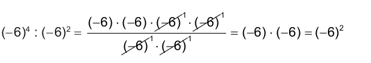Ou seja,
\((-6)^{4} \colon (-6)^{2} = (-6)^{4-2} = (-6)^{2}\)
UNIDADE 2 - CAPÍTULO 3
67
EF07MA01
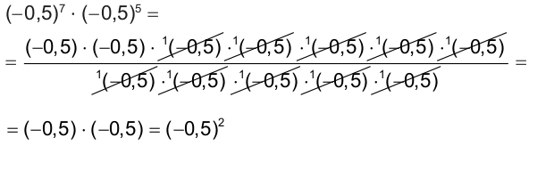
Ao dividirmos potências de mesma base, conserva-se a base e subtraem-se os expoentes.
Esta propriedade pode nos auxiliar a entender por que um número elevado ao expoente 0 (zero) é igual a 1. Observe:
► \(6^{2} \colon 6^{2} = 36 \colon 36 = 1\)
Aplicando a propriedade de divisão de potências de mesma base, temos:
► \(6^{2} \colon 6^{2} = 6^{2-2} = 6^{0}\)
Como as divisões são iguais, o resultado da divisão deve ser o mesmo. Logo, temos que:
► \(6^{0} = 1\)
Potência de uma potência
\( \left[\left(-2\right)^{3}\right]^{4} = (-2)^{3} \cdot (-2)^{3} \cdot (-2)^{3} \cdot (-2)^{3} = (-2)^{3+3+3+3} = (-2)^{12} \)
Ou seja,
\( \left[\left(-2\right)^{3}\right]^{4} = (-2)^{3 \cdot 4} = (-2)^{12} \)
\( \left[\left(\dfrac{1}{3}\right)^{2}\right]^{3} = \left(\dfrac{1}{3}\right)^{2} \cdot \left(\dfrac{1}{3}\right)^{2} \cdot \left(\dfrac{1}{3}\right)^{2} = \left(\dfrac{1}{3}\right)^{2+2+2} = \left(\dfrac{1}{3}\right)^{6} \)
Ou seja,
\( \left[\left(\dfrac{1}{3}\right)^{2}\right]^{3} = \left(\dfrac{1}{3}\right)^{2 \cdot 3}= \left(\dfrac{1}{3}\right)^{6} \)
Na potência de uma potência, repetimos a base e multiplicamos os expoentes.
UNIDADE 2 - CAPÍTULO 3
68
Expressões numéricas
Comente com os alunos que as expressões numéricas que envolvem potência seguem a mesma forma, ou seja, devemos sempre seguir uma ordem para resolvê-las. Quando houver sinais de associação, devemos:
► resolver primeiro as operações entre os parênteses,
► depois as operações entre os colchetes
► e, por fim, as operações entre as chaves.
Quanto a ordem de resolução das operações, devemos:
► resolver primeiro as operações envolvendo raízes ou potências,
► depois as operações envolvendo multiplicações ou divisões
► e, por fim, as operações envolvendo adições e subtrações.
EF07MA01
Expressões numéricas
Para resoluções de expressões numéricas que envolvam potenciação, divisão, multiplicação, adição e subtração de números negativos e positivos, seguimos a mesma forma de resolução das expressões numéricas formadas por números naturais.
Primeiramente, resolve-se a potenciação; na sequência, a divisão ou mul- tiplicação na ordem em que aparecem; em seguida, a adição e subtração, tam- bém respeitando a ordem em que aparecem.
Se na expressão houver parênteses, colchetes e chaves devemos resolver:
1.° parênteses
2.° colchetes
3.° chaves
Vejamos alguns exemplos:
a) \((-5)^{2} + (-2)^{5} - 3^{2} - (-4)^{0} =\)
= 25 − 32 − 9 − 1 =
= −7 − 9 − 1 =
= − 16 − 1 =
= − 17
b) \((1,2)^{2} - (0,2)^{3} + (1,96) \colon (1,4) - (6,1)^{1}\)
= 1,44 − 0,008 + 1,4 − 6,1 =
= 1,432 + 1,4 − 6,1 =
= 2,832 − 6,1 =
= − 3,268
c)
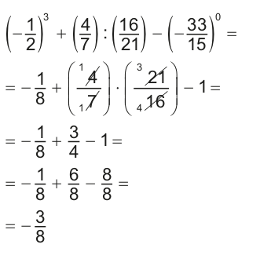d)
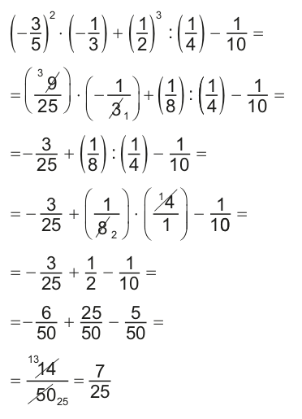UNIDADE 2 - CAPÍTULO 3
69
Encontre soluções
Atividade 6
Nesta atividade, os alunos deverão aplicar as propriedades de potenciação para descobrir o valor que deverá substituir o símbolo ■.
a) Na multiplicação de potências de mesma base, deve-se adicionar os expoentes. Logo, 6 + ■ = 9. Utilizando-se a operação inversa da adição, temos 9 - 6 = 3. Portanto, ■ = 3.
b) Em uma divisão de potências de mesma base, deve-se subtrair os expoentes. Logo, ■ - 4 = 6. Utilizando-se a operação inversa da subtração, temos 6 + 4 = 10. Portanto, ■ = 10.
c) Neste item, temos uma multiplicação de potências de mesma base seguida da divisão. Logo, ■ + 2 - 5 = 5, ou seja, ■ - 3 = 5. Portanto, ■ = 8.
d) Na potência de uma potência, multiplicam-se os expoentes. Logo, 5 · ■ = 20. Utilizando-se a operação inversa da multiplicação, temos 20 : 5 = 4. Portanto, ■ = 4.
e) Na multiplicação de potências de mesma base, deve-se adicionar os expoentes. Logo, 7 + 3 + ■ = 12. Portanto ■ = 2.
f) Neste item, temos uma divisão de potências de mesma base, portanto devemos subtrair os expoentes. Logo, 10 - ■ = 6, ou seja, ■ = 4.
EF07MA01
ENCONTRE SOLUÇÕES
1. Calcule mentalmente e anote a resposta em seu caderno.

a) \(-5)^{2}\) 25
b) \(-3)^{3}\) -27
c) \(+10)^{4}\) 10000
d) \(-3^{3}\) -27
e) \((+8)^{2}\) 64
f) \((-12)^{0}\) 1
g) \((-1)^{20}\) 1
h) \(-1^{12}\) -1
i) \((-10)^{5}\) -100000
j) \((+7)^{2}\) 49
k) \((-1)^{10}\) 1
l) \(-1^{2}\) -81
2. Em seu caderno, represente por meio de potência a quantidade de cubinhos que formam cada cubo. A seguir, calcule quantos cubinhos foram usados para formar cada cubo.
a)
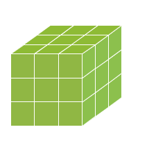 3³ = 27b)
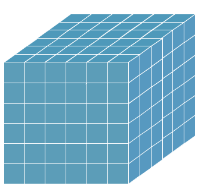 6³ = 216c)
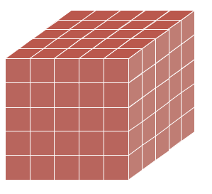 5³ = 125d)
2³ = 83. Escreva na forma de potência e calcule:
a) o quadrado de - 5 (-5)² = 25
b) o cubo de - 4 (-4)³ = -64
c) - 2 elevado ao expoente 8 \(\color{magenta} (-2)^{8} = 256\)
d) 10 elevado ao expoente 5 \(\color{magenta} (10)^{5} = 10 000\)
4. Resolva as potências em seu caderno.
a) \(\left( -\dfrac{1}{2} \right)^{7} \) \(\color{magenta} -\dfrac{1}{128}\)
b) \((-0,1)^{5} \) -0,00001
c) \(\left( -\dfrac{5}{7} \right)^{2} \) \(\color{magenta} \dfrac{25}{49}\)
d) \(\left( -\dfrac{9}{10} \right)^{1} \) \(\color{magenta} -\dfrac{9}{10}\)
e) \(\left( -\dfrac{11}{13} \right)^{0} \) 1
f) \((1,2)^{2} \) 1,44
g) \(\left( +\dfrac{3}{4} \right)^{3} \) \(\color{magenta} \dfrac{27}{64}\)
h) \((-0,5)^{3} \) -0,125
5. Aplicando as propriedades de potenciação que você estudou, escreva os resultados na forma de uma só potência.
a) \((-2)^{3} \cdot (-2)^{4} \cdot (-2)^{1}\) \((-2)^{8}\)
b) \(\left( -\dfrac{2}{3} \right)^{5} \colon \left( -\dfrac{2}{3} \right)^{2}\) \( \left( -\dfrac{2}{3} \right)^{3}\)
c) \(\left[ \left( -0,5 \right)^{3}\right]^{4}\) \( (-0,5)^{12}\)
d) \(\left(\dfrac{3}{5}\right)^{2} \cdot \left(\dfrac{3}{5}\right)^{2} \colon \left(\dfrac{3}{5}\right)^{3} \) \(\dfrac{3}{5}\)
e) \(7^{5} \cdot 7 \colon 7^{2} \) \(7^{4}\)
f) \(\left[ \left( -\dfrac{1}{7} \right)^{4}\right]^{2}\) \(\left( -\dfrac{1}{7} \right)^{8} \)
UNIDADE 2 - CAPÍTULO 3
70
Atividade 7
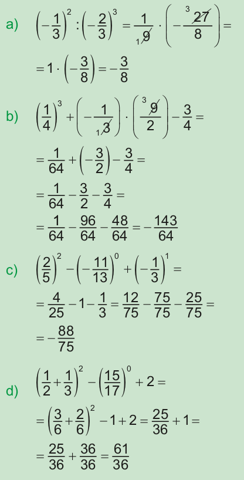Atividade 8
\(2^{6} + 2^{6} + 2^{6} + 2^{6} - 4^{4} = 4 \cdot 2^{6} - 4^{4} = 4 \cdot 64 - 256 = 256 - 256 =0\)
Atividade 9
\(2^{12}\) + 3 x \(2^{10} = 4096 + 3 \cdot 1024 =\)
= 4096 + 3072 = 7168
7168 : 2 = 3584
3584 = \(2^{9}\) x 7
EF07MA01
6. Qual deve ser o valor pelo qual devemos substituir o símbolo ■ para que a igualdade seja verdadeira?
a) \((-0,2)^{6} \cdot (-0,2)^{■} = (-0,2)^{9}\) 3
b) \((1,7)^{■} \cdot (1,7)^{4} = (1,7)^{6}\) 1
c) \((-9)^{■} \cdot (-9)^{2} \colon (-9)^{5} = (-9)^{5}\) 8
d) \(\left[ \left(-15 \right)^{5}\right]^{■} = (-15)^{20} \) 4
e) \((-5)^{7} \cdot (-5)^{3} \cdot (-5)^{■} = (-5)^{12}\) 2
f) \((1,3)^{10} \colon (1,3)^{■} = (1,3)^{6}\) 4
7. Resolva as expressões numéricas em seu caderno.
a) \(\left(-\dfrac{1}{3}\right)^{2} \colon \left(-\dfrac{2}{3}\right)^{3} \) \(-\dfrac{3}{8}\)
b) \(\left(\dfrac{1}{4}\right)^{3} + \left(-\dfrac{1}{3}\right) \cdot \left(\dfrac{9}{2}\right) - \dfrac{3}{4} \) -143
c) \(\left(\dfrac{2}{5}\right)^{2} - \left(-\dfrac{11}{13}\right)^{0} + \left(-\dfrac{1}{3}\right)^{1}\) \(-\dfrac{88}{75}\)
d) \(\left(\dfrac{1}{2} + \dfrac{1}{3}\right)^{2} - \left(-\dfrac{15}{17}\right)^{0} + 2\) \(\dfrac{61}{36}\)
8. (OBMEP) Qual é o valor de \(2^{6} + 2^{6} + 2^{6} + 2^{6} - 4^{4}\)?
a) 0
b) 2
c) 4
d) \(4^{2}\)
e) \(4^{4}\)
9. (OBMEP) Qual é a metade do número \(2^{12} + 3\) x \(2^{10}\)?
a) \(2^{6} + 3\) x \(2^{5}\)
b) \(2^{6} + 3\) x \(2^{10}\)
c) \(2^{11} + 3\) x \(2^{5}\)
d) \(2^{11}\) x 7
e) \(2^{9}\) x 7
Raiz quadrada
Para resolver a situação indicada na ilustração, utilizamos uma operação chamada radiciação.
Observe:
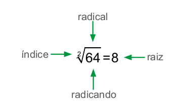UNIDADE 2 - CAPÍTULO 3
71
Atividade 1
Nesta atividade, utilizamos a calculadora como instrumento pedagógico, aproveite para verificar se os alunos estão desenvolvendo o raciocínio lógico, a atitude investigativa e se os argumentos são convencedores. Veja, juntamente com a turma, sobre a mensagem de erro no visor da calculadora e explique que nem sempre é possível realizar as operações com as calculadoras. Nesse caso, porque não é possível calcular a raiz quadrada de um número racional negativo. Todo número racional, seja positivo ou negativo, elevado ao quadrado é sempre um número positivo. Avalie se utilizam os conhecimentos matemáticos para se chegar a essa conclusão, de modo a contemplar a Competência específica de Matemática 2.
EF07MA01
Nem todos os números positivos possuem raiz quadrada exata. Vejamos alguns exemplos de números positivos que apresentam raiz quadrada exata.
a) \(\sqrt{25}\) = 5 , pois 5² = 25
a) \(\sqrt{81}\) = 9 , pois 9² = 81
a) \(\sqrt{1,44}\) = 1,2 , pois (1,2)² = 1,44
a) \(\sqrt{\dfrac{3}{9}} = \dfrac{2}{3}\), pois \(\left( \dfrac{2}{3}\right)^{2} = \dfrac{4}{9}\)
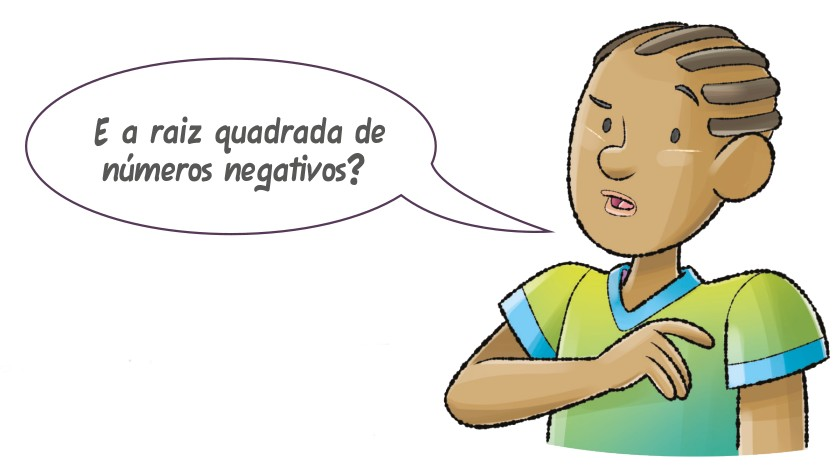
1. Juntamente com um colega e com o auxílio de uma calculadora, tentem calcular a raiz quadrada dos seguintes números:
► \(\sqrt{-25}\)
► \(\sqrt{-1,44}\)
► \(\sqrt{-16}\)
a) O que apareceu no visor? Troque ideias com seu colega e expliquem por que isto ocorreu. Aparece no visor uma mensagem de erro porque não é possível calcular a raiz quadrada de um número racional negativo. Todo número racional, seja positivo ou negativo, elevado ao quadrado é sempre um número positivo.
Vejamos uma situação na qual precisamos calcular a raiz quadrada exata de um número positivo.
Mariana irá fazer uma colcha quadrada de 2,56 m². Para o acabamento da colcha ela irá utilizar uma fita de cetim. Quantos metros de fita serão necessários para esse acabamento?
Como a colcha é quadrada, precisamos calcular a medida do lado do quadrado para, então, calcular a medida do contorno da colcha, ou seja, o seu perímetro.
Para sabermos a medida do lado do quadra- do, precisamos saber qual o número que elevado ao quadrado é igual a 2,56. Dessa forma, utilizaremos a operação inversa da potenciação para realizar esse cálculo, ou seja, a radiciação.
\(\sqrt{-16} = \sqrt{\dfrac{256}{100}} = \dfrac{16}{10} = 1,6\)
Logo, a medida do lado da colcha é igual a 1,6 m.
UNIDADE 2 - CAPÍTULO 3
72
Expressões numéricas
Comente com os alunos que as expressões numéricas com raízes seguem as mesmas regras já vistas anteriormente com potenciação e as demais operações básicas. Aproveite e retome os sinais de prioridade: parênteses ( ), colchetes [ ] e chaves { }. Quando aparecer esses símbolos, iremos resolver a expressão da seguinte forma:
► 1.º as operações que estão dentro dos parênteses;
► 2.º as operações que estão dentro dos colchetes;
► 3.º as operações que estão dentro das chaves.
EF07MA01
Agora, vamos calcular a medida do contorno dessa colcha.
4 ∙ 1,6 = 6,4
Portanto, ela irá precisar de 6,4 m de fita de cetim para fazer o acabamento da colcha.
Expressões numéricas
Vamos acrescentar mais uma operação às expressões numéricas estudadas anteriormente: a raiz quadrada.
Resolve-se na seguinte ordem:
► a raiz quadrada ou potenciação, na sequência em que aparecem;
► a divisão ou multiplicação na sequência em que aparecem;
► a adição e subtração, também respeitando a sequência em que aparecem.
Lembrando ainda que quando houver parênteses, colchetes e chaves, deve-se respeitar esta ordem, respectivamente, para resolver a expressão.
Vejamos alguns exemplos:
a) \(\sqrt{1,44} + 0,5 - (-1,3 + 0,2) = \)
= 1,2 + 0,5 − (−11)=
= 1,2 + 0,5 + 11=
= 2,8
b) \(-2,5 - \sqrt{0,81} \colon 0,3 + \sqrt{2,25} - 0,7 =\)
= −2,5 −0,9:0,3 +1,5 − 0,7 =
= −2,5 −3 + 1,5 − 0,7 =
= −4,7
c)
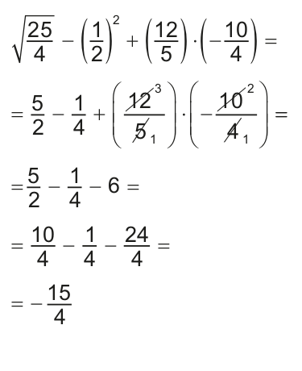d)
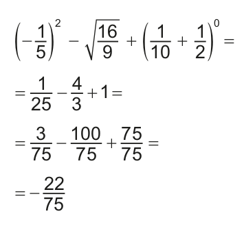UNIDADE 2 - CAPÍTULO 3
73
Encontre soluções
Atividade 3
\(\sqrt{1600} = 40\)
40 · 4 = 160 m (1 volta)
160 · 4 = 640 m (4 voltas)
Ele terá que comprar 640 m de arame farpado.
Atividade 4
Nesta atividade, os alunos, caso queiram, poderão transformar os números decimais em números fracionários e, após calcular a raiz quadrada, retorná-los à forma decimal. Observe:
a) \(\sqrt{0,04} = \sqrt{\dfrac{4}{100}} = \dfrac{2}{10} = 0,2\)
b) \(\sqrt{1,44} = \sqrt{\dfrac{144}{100}} = \dfrac{12}{10} = 1,2\)
c) \(\sqrt{0,16} = \sqrt{\dfrac{16}{100}} = \dfrac{4}{10} = 0,4\)
d) \(\sqrt{0,49} = \sqrt{\dfrac{49}{100}} = \dfrac{7}{10} = 0,7\)
e) \(\sqrt{0,64} = \sqrt{\dfrac{64}{100}} = \dfrac{8}{10} = 0,8\)
f) \(\sqrt{1,69} = \sqrt{\dfrac{169}{100}} = \dfrac{13}{10} = 1,3\)
g) \(\sqrt{\dfrac{25}{100}} = \dfrac{5}{10}\)
h) \(\sqrt{\dfrac{4}{81}} = \dfrac{2}{9}\)
i) \(\sqrt{\dfrac{1}{9}} = \dfrac{1}{3}\)
j) \(\sqrt{\dfrac{121}{16}} = \dfrac{11}{4}\)
EF07MA01
ENCONTRE SOLUÇÕES
1. Determine a medida do lado de um quadrado que tem 196 cm² de área e, em seguida, calcule o seu perímetro. Medida do lado: 14 cm; Perímetro: 56 cm.
2. Calcule em seu caderno:
a) \(\sqrt{82}\) 9
b) \(\sqrt{121}\) 11
c) \(\sqrt{49}\) 7
d) \(\sqrt{1}\) 1
e) \(\sqrt{400}\) 20
f) \(\sqrt{0}\) 0
3. Joaquim possui uma área quadrada com 1 600 m². Ele resolveu cercá-la com arame farpado dando 4 voltas em torno dela. Quantos metros de arame farpado ele terá que comprar? Medida do lado: 40 m; 1 volta: 4 . 40 = 160 m; quantidade de arame farpado: 640 m.
4. Resolva em seu caderno:
a) \(\sqrt{0,04}\) 0,2
b) \(\sqrt{1,44}\) 1,2
c) \(\sqrt{0,16}\) 0,4
d) \(\sqrt{0,49}\) 0,7
e) \(\sqrt{0,64}\) 0,8
f) \(\sqrt{1,69}\) 1,3
g) \(\sqrt{\dfrac{25}{100}}\) \(\frac{5}{10}\)
h) \(\sqrt{\dfrac{4}{81}}\) \(\frac{2}{9}\)
i) \(\sqrt{\dfrac{1}{9}}\) \(\frac{1}{3}\)
j) \(\sqrt{\dfrac{121}{16}}\) \(\frac{11}{4}\)
5. Calcule o valor das expressões numéricas em seu caderno.
a) \(\sqrt{\dfrac{4}{10}} \colon \dfrac{1}{2} + \left( \dfrac{1}{2} - \dfrac{1}{3}\right)\) \(\frac{17}{30}\)
b) \(\left( -\dfrac{1}{3}\right)^{3} \colon \dfrac{1}{9} + \sqrt{\dfrac{1}{36}} - \left( -\dfrac{1}{2}\right)^{2}\) \(-\frac{5}{12}\)
c) \(\sqrt{0,04} + 1,6 - (0,5)^{2} \colon (0,5)\) 1,3
d) \(\sqrt{0,5 + \sqrt{0,25}}\) 1
e) \(\sqrt{\dfrac{9}{25}} - \left( \dfrac{2}{5} - \dfrac{1}{4}\right) \cdot \left( -\dfrac{20}{3}\right) + \sqrt{\dfrac{49}{4}} \) \(\frac{51}{10}\)
f) \( -\dfrac{2}{5} - \sqrt{\dfrac{1}{225}} - \left( \dfrac{1}{6} + \dfrac{1}{2}\right) \colon \dfrac{1}{12} \) \(-\frac{127}{15}\)

6. (OBMEP) Um número é um quadrado perfeito se é igual a um número
inteiro elevado ao quadrado. Por exemplo, 25 = 5², 49 = 7² e 625 =
25² são quadrados perfeitos. Qual é o menor número pelo qual devemos
multiplicar 120 para obter um quadrado perfeito?
120 = \(2^{3}\) · 3 · 5
Logo, o menor número que devemos
multiplicar por 120 é 2 · 3 · 5 = 30.
a) 10
b) 15
c) 20
d) 30
e) 35
Atividade 5
a) \(\sqrt{\dfrac{4}{100}} : \dfrac{1}{2} + \left( \dfrac{1}{2} - \dfrac{1}{3} \right) = \)
\(= \dfrac{2}{10} \cdot \dfrac{2}{1} + \left( \dfrac{3}{6} - \dfrac{2}{6} \right) = \)
\(= \dfrac{1}{5} \cdot \dfrac{2}{1} + \dfrac{1}{6}= \)
\(= \dfrac{2}{5} + \dfrac{1}{6}= \)
\(= \dfrac{12}{30} + \dfrac{5}{30}= \)
\(= \dfrac{17}{30} \)
b) \( \left( - \dfrac{1}{3} \right)^{3} : \dfrac{1}{9} + \sqrt{\dfrac{1}{36}} - \left( - \dfrac{1}{2} \right)^{2} = \)
\( =- \dfrac{1}{27} \cdot \dfrac{9}{1} + \dfrac{1}{6} - \dfrac{1}{4} = \)
\( =- \dfrac{1}{3} + \dfrac{1}{6} - \dfrac{1}{4} = \)
\( =- \dfrac{4}{12} + \dfrac{2}{12} - \dfrac{3}{12} = \)
\( = - \dfrac{5}{12} = \)
c) \(\sqrt{0,04} + 1,6 - (0,5)^{2} : (0,5)\)
= 0,2 + 1,6 - (0,25) : (0,5) =
= 0,2 + 1,6 - 0,5 =
= 1,3
d) \(\sqrt{0,5 + \sqrt{0,25}}\) =
= \(\sqrt{0,5 + 0,5}\) =
= \(\sqrt{1}\) = 1
UNIDADE 2 - CAPÍTULO 3
74
Probabilidade e estatística − Médias
No volume do 6.º ano, estudamos a média aritmética. Nesse momento fazemos uma retomada da média aritmética e apresentamos a média aritmética ponderada.
A média aritmética é calculada adicionando-se todos os números no conjunto e dividindo o resultado pelo total de números adicionados. Podemos ter situações em que cada número adicionado apresenta um peso diferente. Nesse caso, teremos uma média ponderada, em que a média será igual à divisão entre a soma obtida dos produtos de cada valor com seus respectivos pesos pela soma dos pesos.
Para o cálculo de médias, podemos utilizar o software de planilha LibreOffice (software gratuito). A seguir, apresentamos um roteiro para calcular as médias das alturas das alunas da atividade da página 75 do livro do aluno, utilizando este software.
Roteiro
Software: Planilha eletrônica - LibreOffice.org (software gratuito).
Assunto: Cálculo de médias.
Objetivos:
► Utilizar a tecnologia como recurso de aprimoramento dos conhecimentos adquiridos em sala de aula.
► Aplicar os recursos de uma planilha eletrônica para o cálculo de médias.
► Inserir o aluno no mundo digital, com base em um aprendizado mais duradouro e atualizado em relação aos avanços sociais e tecnológicos.
PROBABILIDADE E ESTATÍSTICA
► Médias
Durante a aula de Educação Física, a professora de Luciana anotou a altura das meninas da turma e organizou os dados em um quadro. Observe:
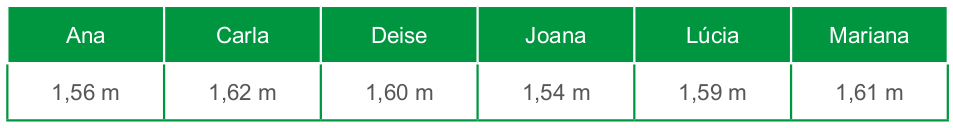1. Troque ideias com um colega e expliquem, em seus cadernos, como podemos calcular a altura média das meninas dessa turma. A média é calculada adicionando-se todos os números no conjunto e dividindo pelo total de números adicionados.
2. Após a explicação, calculem a altura média das meninas dessa turma. \(Média: \dfrac{1,56 + 1,62 + 1,6 + 1,54 + 1,59 + 1,61}{6} = \dfrac{9,52}{6} ≅ 1,59\)
UNIDADE 2 - CAPÍTULO 3
75
Como usar o software
1. Acesse o programa LibreOffice.
2. Digite os dados conforme mostrado a seguir.
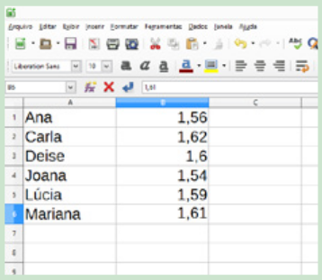3. Clique com o mouse na célula B7 e digite: =. A seguir, selecione o item “média” na barra inferior.
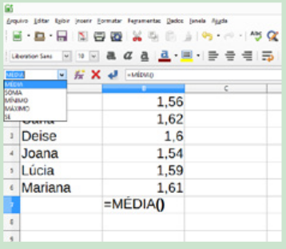4. Clique com o mouse na célula B1 e arraste até a célula B6 para selecionar os valores que serão utilizados para o cálculo da média.
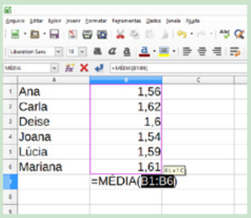5. Aperte “Enter” para mostrar o valor da média. Escreva a palavra “média” na célula A7 e altere a cor para diferenciar o valor da média.
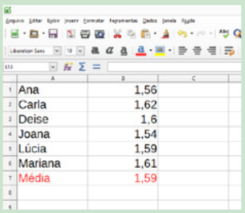EF07MA01
Agora, observem esta outra situação:
Na escola em que Joana estuda, a média anual é calculada por meio de uma média aritmética ponderada, ou seja, os pesos das notas trimestrais são diferentes. Ela está pensativa porque não conseguiu fazer o cálculo da sua média anual nas disciplinas de Língua Portuguesa e Matemática.
Vamos verificar como podemos fazer esse cálculo. Veja as médias trimestrais que Joana obteve em Língua Portuguesa e Matemática.
Nessa escola, a média do 1.° trimestre tem peso 3, a do 2.° trimestre peso 3 e a do 3.° trimestre peso 4.
Vejamos como realizar esse cálculo para a média anual de Língua Portuguesa.
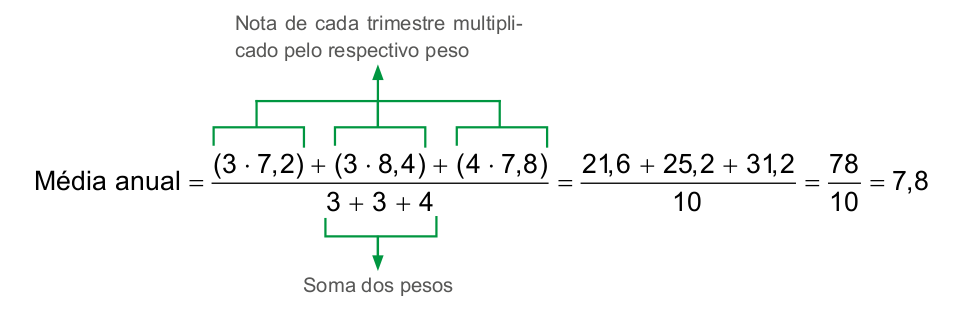Portanto, a média anual de Joana em Língua Portuguesa foi 7,8.
No cálculo de uma média ponderada, devemos realizar a divisão entre a soma obtida dos produtos de cada valor com seus respectivos pesos pela soma dos pesos.
3. Troque ideias com um colega e verifiquem como calcular a média anual de Joana na disciplina de Matemática. Em seguida, calculem.
Atividade 3
Média anual = \(\dfrac{3 \cdot 7,6 + 3 \cdot 7,8 + 4 \cdot 8,2}{10}\) =
\(\dfrac{79}{10} = 7,9\)
UNIDADE 2 - CAPÍTULO 3
76
Atividade 4
Média = \(\dfrac{2 \cdot 6,5 + 3 \cdot 7,2 + 2 \cdot 7,4}{7}\)=
= \(\dfrac{49,4}{7} = 7,06\)
O candidato foi aprovado.
Atividade 5
Preço médio = \(\dfrac{8 \cdot 12 + 4 \cdot 14 + 6 \cdot 13 + 2 \cdot 13,54}{20}\) =
= \(\dfrac{257,08}{20} = 12,85\)
O preço médio é de R$ 12,85.
Atividade 6
Salário médio =
\(\dfrac{20 \cdot 4000 + 10 \cdot 3000 + 30 \cdot 2000}{60}\) =
= \(\dfrac{170000}{60} = 2 833,33\)
O salário médio desses operários é de R$ 2.833,33.
EF07MA01
4. Em um concurso público a prova de Língua Portuguesa tem peso 2, a Redação peso 3 e a de Matemática peso 2. Para ser aprovado, o candidato precisa ter uma média igual ou superior a 7. Lúcio obteve as seguintes notas nas provas:
► Lúcio foi aprovado nesse concurso? A média de Lúcio foi 7,06. Ele foi aprovado.
5. Mário fez uma pesquisa de um determinado produto de limpeza em 20 lugares diferentes. Ele representou no gráfico abaixo o resultado da sua pesquisa.
![Gráfico de barras verticais. Preços encontrados. Eixo horizontal, referente a preços em reais, apresentados pelos valores: 12, 14, 13 e 13,54. Eixo vertical, referente ao número de lugares pesquisados, apresentados em uma escala com início em 0, a partir da base, e término em 8. O gráfico exibe quatro barras verticais. A barra 12 reais, em amarelo, corresponde a 8 lugares. A barra 14, em vermelho, quatro lugares. A barra 13, em verde, seis lugares. A barra 13,54, em azul, dois lugares. Fonte: dados coletados por Mário.](../../resources/images/unidade2/capitulo3/imagem25.png)
► Determine o preço médio desse produto. R$ 12,85
6. (ESAF) Numa empresa, vinte operários têm salário de R$ 4.000,00 mensais; dez operários têm salário de R$ 3.000,00 mensais e trinta têm salário de R$ 2.000,00 mensais. Qual é o salário médio desses operários:
a) R$ 2.833,33
b) R$ 2.673,43
c) R$ 3.234,67
d) R$ 2.542,12
e) R$ 2.235,67
UNIDADE 2 - CAPÍTULO 3
77
Atividade 7
Grupo 1:
\(\dfrac{13+13+14+14+15}{5}\)=
=\(\dfrac{69}{5} = 13,8\)
Grupo 2:
\(\dfrac{13+ 13 + 14+14+15+16}{6}\)=
\(\dfrac{85}{6}\) ≅ 14,17
A média aumenta menos de 1 ano.
Relembre
Atividade 2
9 + 3 + 8 = 20 horas.
Em Hong Kong, serão 20 horas.
Atividade 3
- 480 + 3 340 - 120 - 230 -
100 - 1 200 - 720 - 1 000 =
= - 510
Devendo R$ 510,00.
Atividade 5
125,30 : 5 = 25,06
Cada camiseta custa
R$ 25,06.
Atividade 6
Amostra inicial: 64 = \(2^{6}\).
1.ª hora: \( 8 · 2^{6}\) = \(2^{3}\) · \(2^{6}\) = \(2^{9}\).
2.ª hora: \( 8 · 2^{9}\) = \(2^{3}\) · \(2^{9}\) = \(2^{12}\).
3.ª hora: \( 8 · 2^{12}\) = \(2^{3}\) · \(2^{12}\) = \(2^{15}\).
EF07MA01
7. (FCC) Considere um grupo formado por cinco amigos com idade de 13, 13, 14, 14 e 15 anos. O que acontece com a média de idade desse grupo, se um sexto amigo com 16 anos juntar-se ao grupo?
a) permanecerá a mesma
b) diminuiu 1 ano
c) aumenta 12 anos
d) aumenta mais de 1 ano
e) aumenta menos de 1 ano
RELEMBRE
1. (Saresp) Observe atentamente as retas ordenadas a seguir:
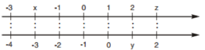A ordenação correta entre os números representados pelas letras x, y e z é
a) x < y < z
b) x < z < y
c) y < x <z
d) y <z < x
2. Em relação a Londres, o fuso horário da cidade de Brasília é de -3 horas e de Hong Kong é +8 horas. Então, quando em Brasília for 9 horas, que horas serão em Hong Kong? 20 horas
3. (UTFPR) A minha conta bancária estava com um saldo negativo de R$ 480,00. No dia 02/04/2014, foi depositado meu salário no valor de R$ 3.340,00. No dia 03/04/2014, eu paguei R$ 120,00 de luz, R$ 230,00 de TV a cabo, R$ 100,00 de telefone e internet, R$ 1.200,00 de aluguel, R$ 720,00 do financiamento do carro e R$ 1.000,00 que estava devendo a um amigo. Depois de pagas todas as contas, minha conta em 05/04/2014 estará:
a) devendo R$ 450,00.
b) com saldo de R$ 450,00.
c) devendo R$ 510,00.
d) com saldo de R$ 510,00.
e) zerada.
4. Uma árvore genealógica é um histórico dos antepassados de uma família. Por meio dela podemos conhecer quem foram nossos avós, bisavós, trisavós, tataravós e assim sucessivamente. Manoel está curioso para saber quantos tataravós ele teve. Ajude Manoel a fazer este cálculo. Represente por meio de uma potência a quantidade de tataravós e, em seguida, calcule. Avós: 2²; bisavós: 2³; trisavós: 2⁴; tataravós: 2⁵ = 32.
5. (UTFPR) Viviane comprou 5 camisetas de mesmo preço por R$ 125,30. Qual o preço de cada camiseta?
a) R$ 22,60.
b) R$ 21,06.
c) R$ 25,60.
d) R$ 25,06.
e) R$ 23,60.
6. O número de bactérias em uma determinada cultura cresce 8 vezes a cada hora. Na amostra inicial dessa cultura havia 64 bactérias. Após 3 horas, quantas bactérias haverá nessa cultura? Represente o resultado por meio de uma potência de base 2. \(2^{15}\)
UNIDADE 2 - CAPÍTULO 3
78
Atividade 8
\( (-2) + (-3) \cdot \left( -\dfrac{1}{2} \right) : (3) =\)
\(= -2 + \dfrac{3}{2} \cdot \left( -\dfrac{1}{3} \right) = -2 - \dfrac{1}{2}=\)
\(= -\dfrac{4}{2} -\dfrac{1}{2} = -\dfrac{5}{2}\)
Atividade 9
(0,012 + 1,5) : 16,8 =
= 1,512 : 16,8 = 0,09
Atividade 10
\(\left( \dfrac{1}{2} \cdot \dfrac{9}{7} \right) : \left( \dfrac{2}{4} - \dfrac{1}{6} \right) +3 =\)
\( = \dfrac{9}{14} : \left( \dfrac{6}{12} - \dfrac{2}{12} \right) + 3 =\)
\( = \dfrac{9}{14} \cdot \dfrac{12}{4} + 3 = \dfrac{9}{14} \cdot 3 + 3 =\)
\( = \dfrac{27}{14} + \dfrac{42}{14} = \dfrac{69}{14} ≅ 4,93\)
Atividade 11
\(\left[ \dfrac{-10 +5 - (-4)}{\sqrt{9} + (-2)} \right]^{3} =\)
\( = \left[ \dfrac{-10 +5 + 4}{ 3 -2} \right]^{3} =\)
\( = \left[ -1 \right]^{3} = -1\)
Atividade 12
Total de água de acordo com a tabela: 24 + 18 + 3,2 + 2,4 + 22 = 69,6 litros.
15% de 200 litros para as demais
atividades: 0,15 · 200 = 30 litros.
Total a ser gasto:
69,6 + 30 = 99,6 litros.
Água economizada:
200 - 99,6 = 100,4 litros.
Atividade 13
\(\dfrac{2}{5} : (1 - 0,7) + \dfrac{1}{2} \cdot \left( \dfrac{1}{4} - 0,75 \right) = \)
\(= \dfrac{2}{5} : (1 - \dfrac{7}{10}) + \dfrac{1}{2} \cdot \left( \dfrac{1}{4} - \dfrac{3}{4} \right) = \)
\(= \dfrac{2}{5} : \dfrac{3}{10} + \dfrac{1}{2} \cdot \left( - \dfrac{2}{4} \right) = \)
\(= \dfrac{2}{5} \cdot \dfrac{10}{3} - \dfrac{1}{4} = \dfrac{4}{3} - \dfrac{1}{4} = \dfrac{16}{12} = \dfrac{3}{12} = \dfrac{13}{12} \)
EF07MA01
7. A área de um tapete quadrado mede 2,25 m². Qual é o perímetro desse tapete? Medida do lado: 1,5; Perímetro: 6 m.
8. (FEI-SP) O valor da expressão \((-2) + (-3) \cdot \left( -\dfrac{1}{2} \right) \colon (-3)\) é:
a) \(-\dfrac{5}{6}\)
b) \(\dfrac{5}{6}\)
c) \(-\dfrac{5}{2}\)
d) \(-\dfrac{5}{3}\)
e) n.d.a
9. (UFRN) Simplificando-se a expressão (0,012 + 1,5):16,8, obtém-se:
a) 0,28
b) 0,09
c) 0,14
d) 0,15
10. (PUC-RJ) A expressão \( \left( \dfrac{1}{2}\cdot \dfrac{9}{7} \right) \colon \left( \dfrac{2}{4} - \dfrac{1}{6} \right) +3 \) representa um número compreendido entre:
a) 2 e 3
b) 3 e 4
c) 4 e 5
d) 5 e 6
e) n.d.a.
11. (PUC-SP) O valor da expressão\(\left[ \dfrac{-10 + 5 -(-4)}{\sqrt{9} + (-2)} \right]^{3}\) é
a) -1
b) -2
c) 2
d) 1
e) n.d.a.
12. (ENEM) De acordo com a ONU, da água utilizada diariamente,
► 25% são para tomar banho, lavar as mãos e escovar os dentes.
► 33% são utilizados em descarga de banheiro.
► 27% são para cozinhar e beber.
► 15% são para demais atividades.
No Brasil, o consumo de água por pessoa chega, em média, a 200 litros por dia.
O quadro mostra sugestões de consumo moderado de água por pessoa, por dia, em algumas atividades.
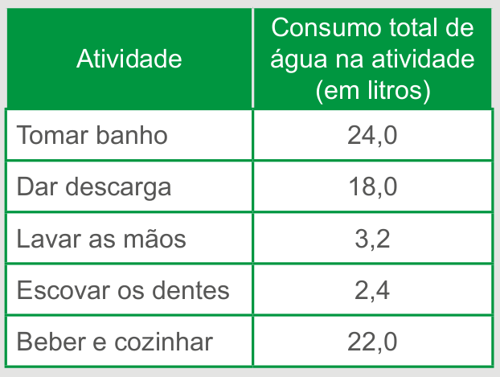Se cada brasileiro adotar o consumo de água indicado no quadro, mantendo o mesmo consumo nas demais atividades, então economizará diariamente, em média, em litros de água:
a) 30,0.
b) 69,6.
c) 100,4.
d) 130,4.
e) 170,0
13. (ACAFE-SC) Calculando o valor da expressão \(\dfrac{2}{5} \colon (1-0,7) + \dfrac{1}{2} \cdot \left( \dfrac{1}{4} - 0,75\right)\) obtemos:
a) \(\dfrac{13}{12}\)
b) \(\dfrac{19}{12}\)
c) \(-\dfrac{13}{100}\)
d) \(\dfrac{4}{3}\)
e) \(-\dfrac{10}{3}\)
Sugestão de atividade
1. Calcule, no caderno, o valor das expressões a seguir.
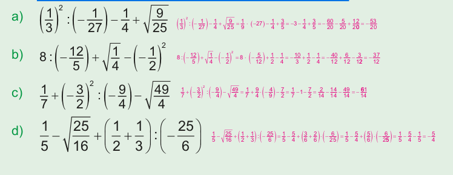UNIDADE 2 - CAPÍTULO 3
79